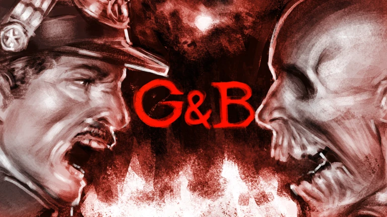

Wikis
I've been working on wikis since 2023. Here are some of my best works!

Zombies vs Humans
June 29th, 2026 - Present
The official Zombies vs Humans Wiki was my most recent project on Miraheze. Started on June 29, 2026 as a fork of the original Fandom wiki, I expanded and revamped much of the content originally on the wiki, such as:
- A brand-new main page
- Multiple revamped templates & modules
- A brand new UI/UX experience
- RobloxAPI & ZvH Lorebook integration
- Project namespace with rules & guidelines

10 Player Flee
March 28th, 2026 - Present
The official 10 Player Flee Wiki was one of my most challenging wikis. Started on March 28th, 2026 from the ground up, I created a new and modern information hub for 10 Player Flee, with:
The wiki launched in beta on May 24th, 2026. A full release is planned for December 2026.
- A main page with many sections for readers & editors alike
- Pages with advanced templates & modules
- An accessible UI
- Valuelist integration
- Five areas of content divided into namespaces (WIP)
- A cosmetic database (WIP)
The wiki launched in beta on May 24th, 2026. A full release is planned for December 2026.

Forsaken
September 2025 - February 2nd, 2026
The official Forsaken Wiki was one of the wikis I spent the most time on. I was brought onto the team as an interface administrator in September of 2025, and in my time I created many various things, like:
- The main page design
- The seasonal themes on the site (Halloween, Christmas, Anniversary)
- The first Mbox template design
- The policy pages
- Also contributed to: Skin pages, infoboxes, staff name colors

Guts & Blackpowder
March 8th, 2025 - Present
The official Guts & Blackpowder Wiki was the second Miraheze wiki I worked on after returning from my year-long break.
I was brought onto the team as a CSS Specialist in March of 2025, and I have helped out with refactoring some of the CSS on the site, and offering help whenever it is needed.
I was brought onto the team as a CSS Specialist in March of 2025, and I have helped out with refactoring some of the CSS on the site, and offering help whenever it is needed.